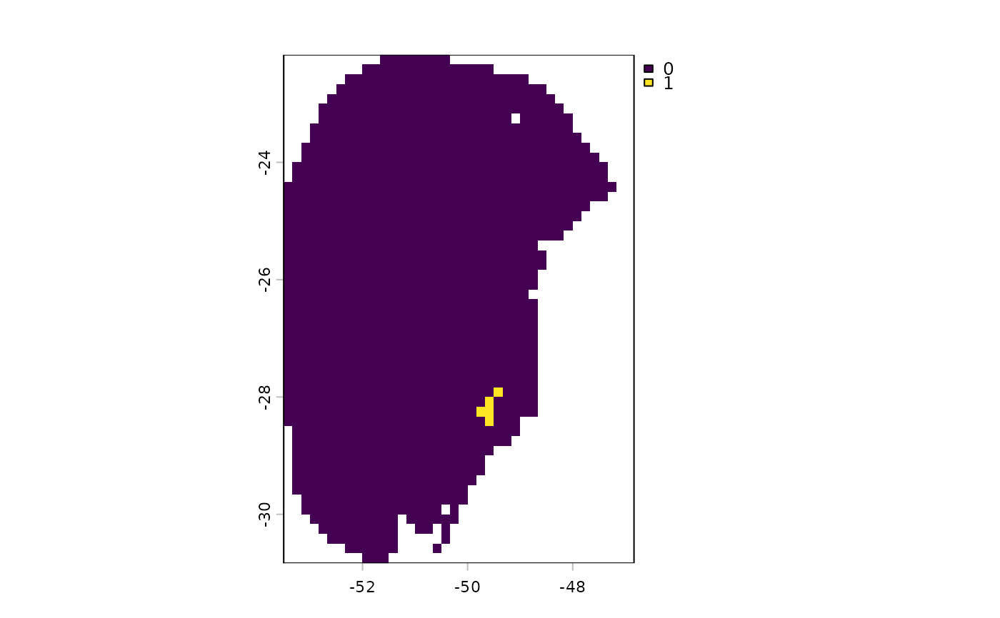

Highlights areas where a specified number of Global Climate Models (GCMs) agree on a given outcome in the projected scenario. The function can identify areas classified as suitable, unsuitable, stable-suitable, stable-unsuitable, gained, or lost.
Arguments
- changes_projections
an object of class
changes_projections, generated byprojection_changes()or imported usingimport_projections(), containing the$Summary_changeselement.- outcome
(character) The outcome to binarize. Available options are "suitable", "unsuitable", "stable-suitable", "stable-unsuitable", "gain" or "loss". Default is "suitable". See details.
- n_gcms
(numeric) The minimum number of GCMs that must agree on the specified outcome for a cell to be included in that category.
Value
A SpatRaster or a list of SpatRaster objects (one per scenario) with the
binarized outcomes. For example, if outcome = "suitable" and n_gcms = 3,
cells with a value of 1 indicate areas where three or more GCMs agree that
the area is suitable for the species in that scenario.
Details
The interpretation of the outcomes depends on the temporal direction of the projection. When projecting to future scenarios:
suitable: Areas that remain suitable (stable-suitable) or become suitable (gain) in the future.
unsuitable: Areas that remain unsuitable (stable-unsuitable) or become unsuitable (loss) in the future.
gain: Areas that are currently unsuitable become suitable in the future.
loss: Areas that are currently suitable become unsuitable in the future.
stable-suitable or stable-unsuitable: Areas that retain their current classification in the future, whether suitable or unsuitable.
When projecting to past scenarios:
suitable: Areas that remain suitable (stable-suitable) or become unsuitable (loss) in the present.
unsuitable: Areas that remain unsuitable (stable-unsuitable) or become suitable (gain) in the present
gain: Areas that were unsuitable in the past are now suitable in the present.
loss: Areas that were suitable in the past are now unsuitable in the present.
stable-suitable or stable-unsuitable: Areas that retain their current classification in the future, whether suitable or unsuitable.
Examples
# Step 1: Organize variables for current projection
## Import current variables (used to fit models)
var <- terra::rast(system.file("extdata", "Current_variables.tif",
package = "kuenm2"))
## Create a folder in a temporary directory to copy the variables
out_dir_current <- file.path(tempdir(), "Current_raw_bin")
dir.create(out_dir_current, recursive = TRUE)
## Save current variables in temporary directory
terra::writeRaster(var, file.path(out_dir_current, "Variables.tif"))
# Step 2: Organize future climate variables (example with WorldClim)
## Directory containing the downloaded future climate variables (example)
in_dir <- system.file("extdata", package = "kuenm2")
## Create a folder in a temporary directory to copy the future variables
out_dir_future <- file.path(tempdir(), "Future_raw_bin")
## Organize and rename the future climate data (structured by year and GCM)
### 'SoilType' will be appended as a static variable in each scenario
organize_future_worldclim(input_dir = in_dir, output_dir = out_dir_future,
name_format = "bio_", fixed_variables = var$SoilType)
#>
|
| | 0%
|
|========= | 12%
|
|================== | 25%
|
|========================== | 38%
|
|=================================== | 50%
|
|============================================ | 62%
|
|==================================================== | 75%
|
|============================================================= | 88%
|
|======================================================================| 100%
#>
#> Variables successfully organized in directory:
#> /tmp/RtmpeCG0t2/Future_raw_bin
# Step 3: Prepare data to run multiple projections
## An example with maxnet models
## Import example of fitted_models (output of fit_selected())
data(fitted_model_maxnet, package = "kuenm2")
## Prepare projection data using fitted models to check variables
pr <- prepare_projection(models = fitted_model_maxnet,
present_dir = out_dir_current,
future_dir = out_dir_future,
future_period = c("2081-2100"),
future_pscen = c("ssp585"),
future_gcm = c("ACCESS-CM2", "MIROC6"),
raster_pattern = ".tif*")
# Step 4: Run multiple model projections
## A folder to save projection results
out_dir <- file.path(tempdir(), "Projection_results/maxnet_bin")
dir.create(out_dir, recursive = TRUE)
## Project selected models to multiple scenarios
p <- project_selected(models = fitted_model_maxnet, projection_data = pr,
out_dir = out_dir)
#>
|
| | 0%
|
|======================= | 33%
|
|=============================================== | 67%
|
|======================================================================| 100%
# Step 5: Identify areas of change in projections
## Contraction, expansion and stability
changes <- projection_changes(model_projections = p, write_results = FALSE,
return_raster = TRUE)
# Step 6: Binarize changes
future_suitable <- binarize_changes(changes_projections = changes,
outcome = "suitable",
n_gcms = 1)
terra::plot(future_suitable)
